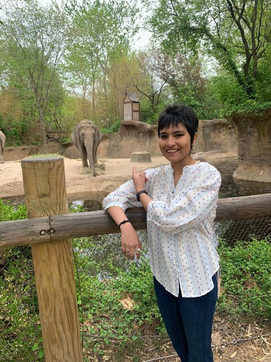

Israt Jahan

I am an Evolutionary Biologist and Behavioral Ecologist. My Ph.D. focused on the evolution of multicellularity and symbiosis in the social amoeba Dictyostelium discoideum. I was co-supervised by Professor Joan Strassmann and Professor David Queller at Washington University in St. Louis and was funded by McDonnell International Scholars Academy. I use a combination of lab experiments, agent-based models, comparative genomics, phylotranscriptomics, and statistical modeling to research how genetic conflicts, and/or their resolution, drive the evolution of complex life and novel adaptations.
Selected Publications
- Jahan I, Scott TJ, Strassmann JE, & Queller DC. Testing the coordination hypothesis: incompatibilities in aggregative development of an experimentally evolved social amoeba. Evolution Letters (2025). https://doi.org/10.1093/evlett/qrae063
- Larsen TJ, Jahan I, Brock DA, Strassmann JE, & Queller DC. Reduced social function in experimentally evolved Dictyostelium discoideum implies selection for social conflict in nature. Proceedings of the Royal Society B (2023). https://doi.org/10.1098/rspb.2023.1722
- Jahan I, Larsen T, Strassmann JE, & Queller DC. Group maintenance in aggregative multicellularity. The Evolution of Multicellularity (2021). https://doi.org/10.1201/9780429351907-9
- Jahan I, Larsen TJ, Strassmann JE, & Queller DC. A history of symbiosis impacts the host evolutionary trajectory in experimentally evolved amoebas. bioRxiv (2026). https://doi.org/10.64898/2026.03.18.712585